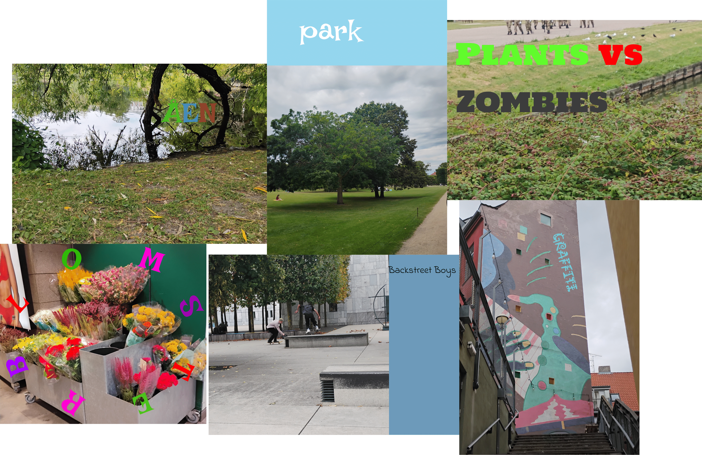
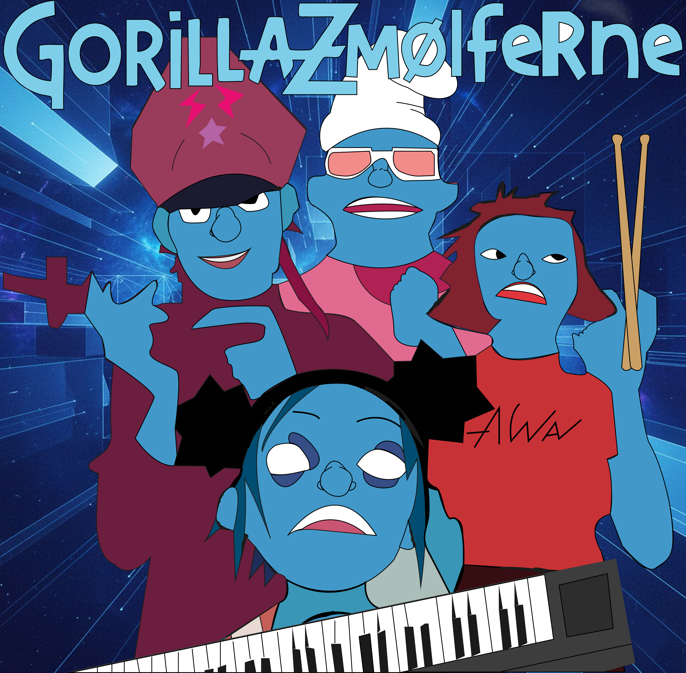
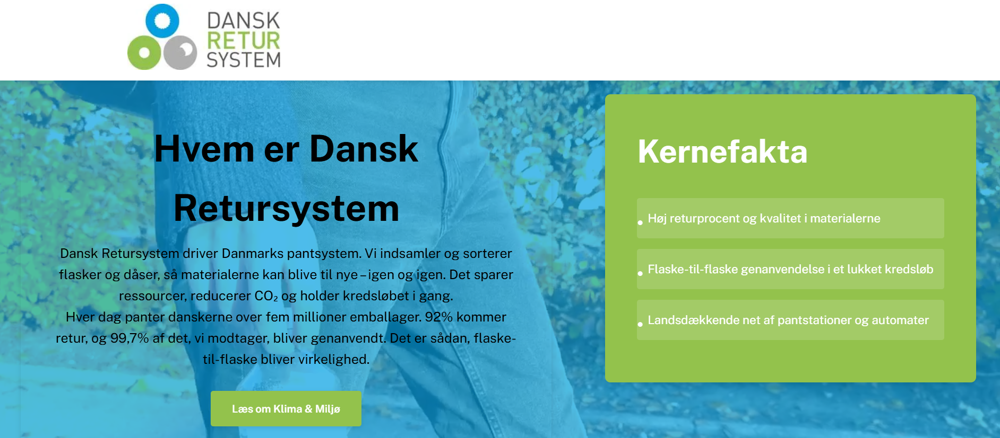

Flow 1 – Billedbehandling & Prototype
Fokus på billedredigering, webdesign og opbygning af prototype.

Læs mereHer finder du en oversigt over mine fire flowprojekter fra 1. semester.
Fokus på billedredigering, webdesign og opbygning af prototype.

Læs mereUdvikling af første fulde website i ren HTML og CSS.
 Læs mere
Læs mere
Design af farver, typografi, identitet og grafiske elementer.

Læs mereKampagneudvikling på tværs af digitale platforme.

Læs mere